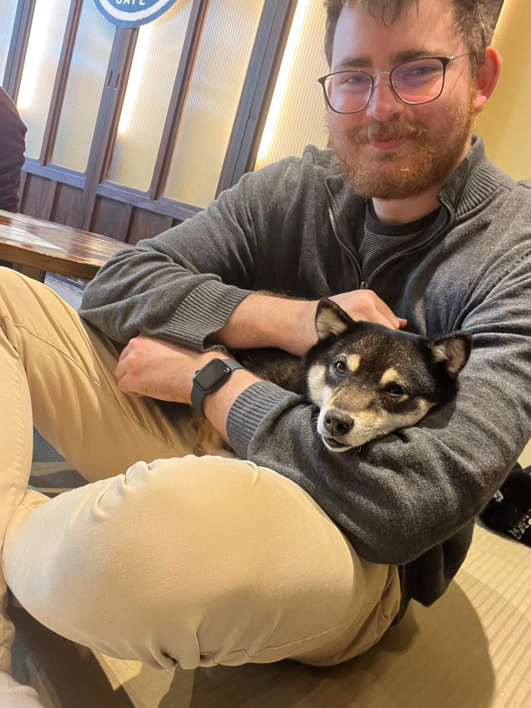

Joshua Williams

Student ID: 104866099
Course: Diploma of IT
Email: 104866099@student.swin.edu.au
Hi, I'm Josh Williams. I'm 25 years old, and have recently decided to change careers, having previous experience in management and business administration. I started my career moving into a business administration role with a local small business where I developed the skills needed to lead people and apply my business acumen knowledge to a large organisation. I then moved into a management position at Westfield, leading a team of 60 casual staff across departments like valet, information desks, and car park. As much as I enjoyed the opportunity, I couldn’t ignore my passion for computers and IT for long, and that’s when I decided to study.
I have lived most of my live in the southeastern suburbs of Melbourne, and moved out of home when I was 19. I’ve lived close to the city, but I grew up in the Pakenham area on the outskirts of metro Melbourne, and I love the community and growing infrastructure, despite the longer commutes.
I love to listen to many different musicians, rarely skipping songs, but what I love to listen to on a Sunday afternoon is sound tracks from movies, namely Interstellar, and the suites of Hans Zimmer. This kind of existential and biopic-based music ties into the movies I love as well, again Interstellar, but also documentaries by David Attenborough, sci-fi fiction like Dune, and a lesser known movie The King on Netflix that starred Timothee Chalamet and Robert Pattinson. Recently I’ve had a soft spot for political war films, with Oppenheimer being the most recent, and my all-time favourite movie Darkest Hour, based around Winston Churchill during World War II.
2023 Class Timetable
| Day | Subject | Time |
|---|---|---|
| Monday | Fundamentals of Programming | 8:30am-10:30am |
| Network Fundamentals | 10:30am-12:30pm | |
| Computer Technology | 2:30pm-4:30pm | |
| Computing Systems Project | 4:30pm-6:30pm | |
| Tuesday | Network Fundamentals | 10:30am-12:30pm |
| Fundamentals of Programming | 12:30pm-2:30pm | |
| Computing Systems Project | 3:30pm-5:30pm | |
| Wednesday | Network Fundamentals | 10:30am-12:30pm |
| Computer Technology | 12:30pm-2:30pm | |
| Thursday | Fundamentals of Programming | 8:30am-10:30am |
| Computer Technology | 10:30am-12:30pm | |
| Computing Systems Project | 1:30pm-3:30pm |
Brayden Hall
Student ID: 105128101
Course: Diploma of Information Technology
Email: 105128101@student.swin.edu.au
Hello, My name is Brayden Hall. I am currently a student at Swinburne University studying a diploma of IT. I have the intention of continuing this into a Bachelor of Comp Sci. Previously I have been an Education Support worker at a high school local to my area. I am hoping to enter into a more tech centric job after I finish my study.
I was born in Melbourne and moved shortly after to Seymour, where I have lived up until this point. I have 2 dogs, 2 cats, and many more pets. Favorite movies include Spiderman into/across the spiderverse, How to train your dragon and many other older Pixar and Dreamworks movies that I grew up watching. My favorite Book series include Harry Potter, Eragon and Cradle.
My favorite places I have visited are Japan during the cherry blossom season, It was incredible to see so many cherry trees in full bloom and some of their temples and historic buildings are built to an absurd scale. And New Zealand during the summer, Where you can walk without fear because they dont have any snakes! Not to mention the incredible sights.
2023 Class Timetable
| Day | Subject | Time |
|---|---|---|
| Monday | Fundamentals of Programming | 8:30am-10:30am |
| Network Fundamentals | 10:30am-12:30pm | |
| Computer Technology | 2:30pm-4:30pm | |
| Computing Systems Project | 4:30pm-6:30pm | |
| Tuesday | Network Fundamentals | 10:30am-12:30pm |
| Fundamentals of Programming | 12:30pm-2:30pm | |
| Computing Systems Project | 3:30pm-5:30pm | |
| Wednesday | Network Fundamentals | 10:30am-12:30pm |
| Computer Technology | 12:30pm-2:30pm | |
| Thursday | Fundamentals of Programming | 8:30am-10:30am |
| Computer Technology | 10:30am-12:30pm | |
| Computing Systems Project | 1:30pm-3:30pm |
Nicolas Rivera

Student ID: 104927158
Course: Diploma of Information Technology (Unilink) Computer science stream
Email: 104927158@student.swin.edu.au
Hi! My name is Nicolas Rivera and I’m a student at Swinburne University currently doing a diploma of IT. I’m in my 20s and I have some experience working in the film industry as an FX artist. I’ve worked on a couple of movies such as the recent Napoleon (2023) film, Strays (2023) and Hocus Pocus 2. As much as I enjoyed parts of the job, I’m hoping to pivot my career into a more programming orientated role hence why I’m studying computer science at Swinburne!
I was originally born in the capital city of Chile, Santiago but I moved very early to Australia so most of my memories are from the down under. I grew up and moved around a bit in the south eastern suburbs of Melbourne. My favourite place where I lived was Belgrave. A beautiful area further out from the CBD, it had a lot of gardens and a lovely small community. Nearby you could even catch the puffing billy train which is thankfully back in service after COVID.
I have a mish mash of favourite music genres and bands. You can never go wrong with Daft Punk or Gorrilaz. But some of my favourite bands are Caravan Palace, Lorn, Bonobo, Aussie composer Kevin Penkin and The Cat Empire.
I have so many favourite movies it’s always hard to pick one. I will always have a soft spot for both 2D and 3D animation films, I love Ghibli films such as Howl’s Moving Castle and movies from Pixar like the Incredibles sparked my interest in getting into the animation industry. My favourite movies from recent years tend to be more sci fi orientated such as Annihilation and Blade Runner 2049 but I love Spiderman into the Spiderverse and Everything Everywhere All At Once (highly recommend this one if you ever have the chance to watch it!).
2023 Class Timetable
| Day | Subject | Time |
|---|---|---|
| Monday | Fundamentals of Programming | 8:30am-10:30am |
| Network Fundamentals | 10:30am-12:30pm | |
| Computer Systems | 2:30pm-4:30pm | |
| Computing Systems Project | 4:30pm-6:30pm | |
| Tuesday | Network Fundamentals | 10:30am-12:30pm |
| Fundamentals of Programming | 12:30pm-2:30pm | |
| Computing Systems Project | 3:30pm-5:30pm | |
| Wednesday | Network Fundamentals | 10:30am-12:30pm |
| Computer Technology | 12:30pm-2:30pm | |
| Thursday | Fundamentals of Programming | 8:30am-10:30am |
| Computer Technology | 10:30am-12:30pm | |
| Computing Systems Project | 1:30pm-3:30pm |
Cooper Simester
Student ID: 102578253
Course: Diploma of Information Technology (Unilink)
Email: 102578253@student.swin.edu.au
Hi, my name is Cooper Simester. I'm 23 years old studying a Diploma of IT at Swinburne. I first started at Swinburne in 2019, with an initial focus of Physical and Digital Games Design. During COVID in 2020 I realised while it was a passion, this wasn't a field in which I wanted a career and started to lean towards something closer to cyber security or data analytics. Since 2022 I have been studying IT part-time.
I have an extensive history in labour, currently being employed at a company called Credo in which I work nightshift performing shopfitting works for different Coles locations around Melbourne. I hope to transition to a more tech focused career following my completion of my Diploma.
I have a 4 year old daughter named Astrid, who is in my full time care. The picture on this page is of us looking at Christmas lights along with my partner of 2½ years who also lives with us. Her name is Angel.
One of Astrid's favourite things to do on the weekend is take the train into the city, whether we go to a museum or just walk around looking at different shops. She is (very) obsessed with Batman and we often watch cartoons together.
My interests in music are diverse, but both rap and indie are my favourite. My favourite album is Tyler the Creator's Flower Boy, and I had the chance to see him live earlier this year!
My favourite movies are Juno, Fight Club and Zathura.
2023 Class Timetable
| Day | Subject | Time |
|---|---|---|
| Monday | Advanced Programming | 2:30pm-4:30pm |
| Computer Systems Project | 4:30pm-6:30pm | |
| Tuesday | Computer Systems Project | 3:30-5:30pm |
| Wednesday | Advanced Programming | 10:30am-12:30pm |
| Thursday | Computer Systems Project | 1:30pm-3:30pm |
| Advanced Programming | 3:30pm-5:30pm |
Masachchige Thisaga
Student ID: 103841969
Course: Diploma of information technology (unilink)
Email: 103841969@student.swin.edu.au
Hi there! I'm Thisaga Sathnidu, currently pursuing a Diploma of Information Technology at Swinburne University through Unilink. You can reach me at 12345666@student.swin.edu.au if you ever need to get in touch.
Originally from Kottawa, Sri Lanka, I moved to Australia to pursue my studies. While I miss my hometown, I've developed a fondness for Los Angeles, particularly its vibrant atmosphere and diverse culture.
In terms of my interests, I have a passion for movies. Interstellar, The Town, Den of Thieves, and Now You See Me are among my favorites. I appreciate the creativity and storytelling in these films.
When it comes to music, I have a diverse taste, but I particularly enjoy hip hop and rap. Artists like Kendrick Lamar, J. Cole, and Eminem are some of my go-to choices.
2023 Class Timetable
| Day | Subject | Time |
|---|---|---|
| Monday | Digital Technology In An Indigenous Context | 11:30am-1:30pm |
| Advanced Programming | 2:30pm-4:30pm | |
| Computer Systems Project | 4:30pm-6:30pm | |
| Tuesday | Digital Technology In An Indigenous Context | 1:30pm-3:30pm |
| Computer Systems Project | 3:30-5:30pm | |
| Wednesday | Advanced Programming | 10:30am-12:30pm |
| Digital Technology In An Indigenous Context | 2:30-4:30pm | |
| Thursday | Computer Systems Project | 1:30pm-3:30pm |
| Advanced Programming | 3:30pm-5:30pm |